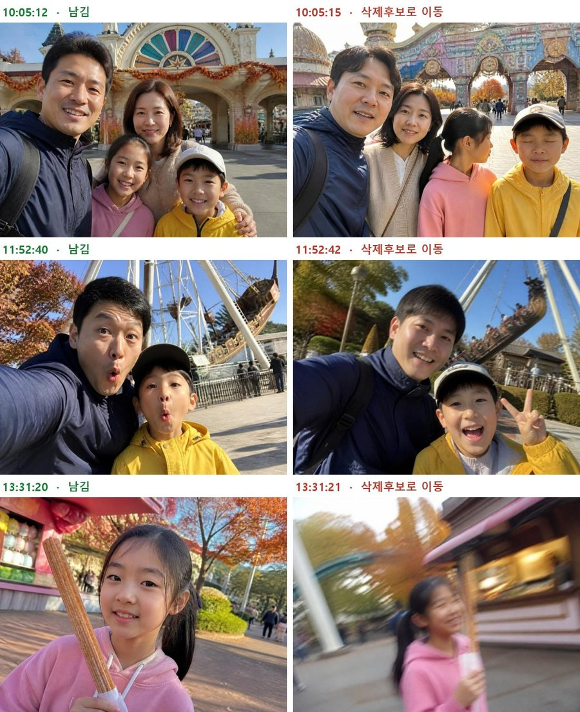
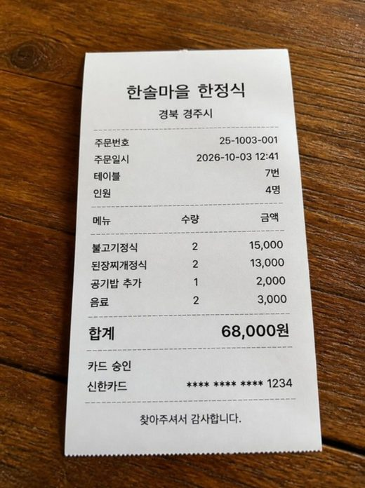

시작 전에 한 번만
준비할 것 세 가지
- Claude 유료 계정으로 로그인해 주세요. 1교시의 폴더 맡기기(Cowork)는 유료 요금제에서 됩니다. Pro는 미국 기준 월 20달러입니다.
- Claude 데스크톱 앱(Windows·macOS)을 설치해 주세요. 1교시는 앱에서 합니다.
- 파일 만들기 켜기: 설정 → 기능(Capabilities) → '코드 실행 및 파일 생성(Code execution and file creation)'을 켜 주세요. 2·3교시에서 엑셀과 파워포인트 파일을 받을 때 필요합니다.
세 실습 모두 이 순서로 맡깁니다
- 기준을 말한다무엇을, 어떻게 해 달라는지 문장으로 적어요
- 계획을 보고 허락한다Claude가 먼저 보여 주는 계획을 읽어요
- 결과를 직접 확인한다숫자와 사진은 내 눈으로 한 번 더
- 말로 고친다마음에 안 드는 곳을 그대로 말해요
1교시 · 50분 · 데스크톱 앱
사진 폴더로 가족 앨범 만들기
여행 사진 폴더 하나를 맡기면, 비슷한 사진은 따로 빼 두고 남은 사진으로 휴대폰에서 보는 앨범 한 장을 만들어 줍니다.
준비물
- 실습 사진 15장(아래에서 내려받기) 또는 내 사진 복사본 30~100장
- Claude 데스크톱 앱과 유료 계정
따라 하기
실습 사진을 내려받아 압축을 풀어 주세요.
'실습사진-경주월드' 폴더에 사진 15장이 들어 있습니다. 내 사진으로 하실 때는 원본 말고 복사본 폴더를 따로 만들어 주세요.
데스크톱 앱에서 Cowork를 열고 그 폴더를 골라 주세요.
사진이 잔뜩 든 상위 폴더 말고, 이번에 쓸 폴더 하나만 고릅니다. Cowork는 고른 폴더의 파일을 직접 읽고 씁니다.
아래 부탁 문장을 붙여 넣어 주세요.
부탁 문장 · 앨범 만들기이 폴더의 사진으로 가족 앨범을 만들어 줘. 1. 원본은 지우지 말고, 비슷한 사진 중 덜 잘 나온 것은 '삭제후보' 폴더로 옮겨 줘. 2. 남은 사진을 찍은 날짜 순서로 정리해 줘. 날짜를 모르는 사진은 맨 뒤에. 3. 날짜별로 제목을 붙인 앨범을 album.html 한 파일로 만들어 줘. 휴대폰에서도 보이게. 4. 시작하기 전에 계획을 먼저 보여 주고, 내가 좋다고 하면 진행해.
Claude가 보여 주는 계획을 읽어 주세요.
실습에서는 Claude가 사진 15장의 촬영 날짜를 읽고, 몇 초 간격으로 찍은 비슷한 사진 3묶음을 찾아 나란히 보여 줬습니다. 눈을 감은 사진, 흔들린 사진을 '삭제후보'로 옮기겠다는 계획이었습니다.

Claude가 계획 단계에서 보여 준 비교 그림입니다. 왼쪽은 남기고, 오른쪽은 '삭제후보' 폴더로 옮깁니다. 실습에서 Claude가 함께 물어본 것
앨범 제목을 정해 주세요. 정하지 않으시면 '경주월드 가족 나들이'로 하겠습니다.
바이킹 앞 셀카 두 장은 표정이 달라서 둘 다 남기고 싶으시면 말씀해 주세요.
계획이 괜찮으면 허락해 주세요.
부탁 문장 · 허락하기좋아, 그대로 진행해
결과를 열어 확인해 주세요.
실습 결과: 폴더에 사진 12장이 남고, '삭제후보' 폴더에 3장과 이동기록.txt(무엇을 왜 옮겼는지)가 생겼습니다. album.html 한 파일(약 2.6MB)은 카카오톡으로 휴대폰에 보내도 바로 열립니다.
마음에 안 들면 말로 고쳐요
사진에 시각만 있어서 허전하다면
고치는 말 · 실습에서 쓴 문장사진에 시간만 나오니 너무 휑해. 장소라든지 짧은 설명을 붙여줘
사진 12장마다 '정문', '회전목마' 같은 장소와 "경주월드 도착! 정문 앞에서 다 같이 한 장" 같은 설명이 붙었습니다. Claude는 놀이기구의 실제 이름처럼 사진만으로 알 수 없는 것은 일반적인 이름으로 적었다고 알려 줬습니다.
설명 하나만 바꾸고 싶다면
고치는 말 · 바꿔 쓰기오후 3시 24분 사진 설명을 '관람차에서 내려다본 보문호'로 바꿔 줘
완성 확인
안전하게 맡기기
하지 말 것
- 사진 전체가 든 상위 폴더를 통째로 연결하기
- "필요 없는 건 지워 줘"라고 부탁하기
- 사진 속 사람 이름을 알려 달라고 하기 (지원하지 않습니다)
이렇게
- 이번 작업용 폴더 하나만 연결하기
- 지우기 대신 '삭제후보로 옮기기'. 영구 삭제는 Claude가 반드시 허락을 묻습니다
- 가족 얼굴이 담긴 앨범은 보낼 사람을 정하고 공유하기
막힐 때
폴더를 고르는 버튼이 안 보여요
유료 계정으로 로그인했는지, 웹이 아니라 데스크톱 앱인지 확인해 주세요.
엉뚱한 사진을 골라요
흐리거나 돌아간 사진, 아주 작은 사진은 잘못 볼 수 있어요. "눈 감은 사진, 흔들린 사진을 빼 줘"처럼 기준을 더 구체적으로 말해 주세요.
순서가 뒤섞였어요
"날짜를 모르는 사진은 맨 뒤로"를 넣어서 다시 부탁해 주세요. 카카오톡으로 받은 사진은 촬영 날짜가 지워져 있을 때가 많습니다.
2교시 · 50분 · 채팅
영수증 사진으로 정산표 만들기
여행이나 모임 영수증 사진을 보여 주면, 누가 누구에게 얼마를 보내면 되는지 계산된 엑셀 정산표를 만들어 줍니다.
준비물
- 실습 영수증 6장(아래에서 내려받기) 또는 내 영수증 사진 5~10장
- '코드 실행 및 파일 생성' 켜기 (시작 전에 참고)
- 엑셀 또는 무료 스프레드시트 앱
따라 하기
실습 영수증을 내려받아 압축을 풀어 주세요.

실습 영수증 6장 중 한 장. 카드번호는 가려져 있습니다. 내 영수증으로 하실 때는 카드번호와 계좌번호를 가리고 찍어 주세요.
새 대화에 영수증 사진 6장을 올리고 부탁 문장을 붙여 넣어 주세요.
부탁 문장 · 정산 엑셀이 영수증으로 4명(민수, 지영, 서준, 나)이 똑같이 나누는 정산표를 엑셀 파일로 만들어 줘. 시트1: 영수증 목록과 합계 시트2: 사람별로 낸 돈, 내야 할 돈, 차액 시트3: 누가 누구에게 얼마를 보내면 끝나는지 (송금 횟수가 가장 적게) 금액은 원 단위, 계산은 엑셀 수식으로 넣어 줘.
먼저 표로만 확인하고 싶다면
부탁 문장 · 표로 뽑기영수증 사진 6장이야. 한 장씩 읽어서 표로 만들어 줘. 열: 번호 | 날짜 | 가게 | 금액(원) | 낸 사람 읽기 어려운 글자는 추측하지 말고 '확인 필요'라고 적어 줘. 마지막 줄에 합계.
Claude가 모르는 것을 물어보면 답해 주세요.
실습에서 Claude가 물어본 세 가지
신한카드 ****1234는 누구의 카드인가요? (테마파크, 한정식, 카페 결제)
민수
국민카드 ****5678은 누구의 카드인가요? (주유소, 편의점, 기념품샵 결제)
민수
한정식 영수증의 품목 합계(64,000원)와 영수증 합계(68,000원)가 다릅니다. 정산에는 어느 금액을 쓸까요?
64,000원
영수증의 숫자는 사람이 한 번 더 봐야 합니다. 실습처럼 Claude가 맞지 않는 곳을 먼저 찾아 주기도 합니다.
엑셀 파일을 받아 열어 주세요.
실습 결과: 총 지출 331,300원, 1인당 82,825원. 민수가 모두 결제해서 지영·서준·나가 민수에게 82,825원씩 보내면 끝납니다(송금 3번). 계산은 엑셀 수식으로 들어 있어서 금액을 고치면 다시 계산됩니다.
마음에 안 들면 말로 고쳐요
시트가 많아서 보기 어렵다면
고치는 말 · 실습에서 쓴 문장세부 품목내역과 송금 방법은 필요없어. 사람별 정산까지 한 탭에 나오게 하고 가시성 좋게 만들어
시트 세 개가 한 탭으로 합쳐지고, 총 지출·인원·1인당 금액이 맨 위에 크게 나왔습니다. 위 그림이 그 결과입니다.
일부만 같이 낸 사람이 있다면
고치는 말 · 바꿔 쓰기서준은 카페 영수증만 나눠 내고, 나머지는 3명이 나누도록 정산표를 고쳐 줘
완성 확인
돈 이야기에서 지킬 것
하지 말 것
- 카드번호·계좌번호가 보이는 채로 올리기
- Claude에게 송금까지 맡기기
- 정산 파일을 모르는 사람에게 공유하기
이렇게
- 민감한 숫자는 가리고 찍기
- 송금은 표를 보고 내가 직접
- 단톡방에는 사람별 정산 결과만 붙여 넣기
막힐 때
파일이 안 만들어져요
설정 → 기능에서 '코드 실행 및 파일 생성'이 켜져 있는지 확인하고 다시 부탁해 주세요.
합계가 안 맞아요
'확인 필요'라고 적힌 줄부터 영수증과 다시 대조해 주세요. 구겨지거나 흐린 영수증은 숫자를 잘못 읽을 수 있습니다.
사진을 몇 장까지 올릴 수 있나요?
채팅에는 한 번에 20장까지 올릴 수 있고, 파일 하나는 30MB까지입니다.
3교시 · 50분 · 채팅
내 글로 발표 슬라이드 만들기
내가 쓴 글을 주면 바로 발표할 수 있는 파워포인트 파일을 만들어 줍니다. 실습에서는 「투자를 합시다 1편」 원고로 독서 모임 발표 슬라이드를 만들었습니다.
준비물
- 실습 원고(아래에서 내려받기) 또는 내가 쓴 글 한 편(A4 한 장 안팎)
- '코드 실행 및 파일 생성' 켜기 (시작 전에 참고)
- 파워포인트 또는 무료 뷰어
따라 하기
원고를 준비해 주세요.
새 대화에 원고 파일을 올리고 부탁 문장을 붙여 넣어 주세요.
부탁 문장 · 실습에서 쓴 문장아래 글로 발표 슬라이드를 만들어 줘. - 듣는 사람: 동네 독서 모임 회원 15명 - 발표 시간: 5분 - 장수: 표지 포함 8장 - 한 장에 글은 3줄 이하, 큰 글씨 - 파워포인트 파일(.pptx)로 만들어 줘
듣는 사람, 시간, 장수를 함께 말할수록 결과가 좋아집니다. "슬라이드 만들어 줘"만 쓰면 Claude가 짐작해서 만듭니다.
받은 파일을 열어 봐 주세요.
실습에서는 표지 포함 8장이 나왔습니다. Claude는 파일을 넘기기 전에 화면으로 열어 보고, 줄이 넘친 두 곳을 스스로 고쳤습니다.
마음에 안 드는 점을 말해 주세요.
고치는 말 · 내용 다 넣기슬라이드에 내 글 전체 내용이 다 들어가 있지 않아. 내 글 전체를 분석해서 슬라이드를 다시 작성하고 디자인도 수정해
실습에서 Claude가 되물은 것
글 전체 내용을 담으려면 처음 조건(8장·3줄·5분)과 부딪힙니다. 어떻게 할까요?
16장으로 늘리기 (한 장 3줄은 그대로)
조건끼리 부딪히면 Claude가 먼저 물어봅니다. 실습에서는 16장으로 늘리고, 원고의 숫자와 이름 78가지가 빠짐없이 들어갔는지 하나씩 대조했습니다. 원고에서 계산이 안 맞는 곳(60년이 아니라 55년)도 찾아 알려 줬습니다.
한두 장만 고칠 때는 번호로 말해 주세요.
고치는 말 · 번호로 고치기좋아. 세 군데만 고쳐 줘. 1. 2번 슬라이드 제목을 '왜 이 글을 썼나'로 2. 5번 슬라이드는 글 대신 표 하나로 3. 마지막 장에 다음 모임 날짜(10월 18일 토요일 오전 10시)를 크게 고친 파워포인트 파일과 PDF 파일을 둘 다 줘.
디자인을 더 바꾸고 싶다면 Pro에 들어 있는 Claude의 슬라이드 기능(Claude Design)에서 다시 만들고 PPTX나 PDF로 내보낼 수 있습니다.
완성 확인
맡기기 전에 볼 것
조심할 것
- 날짜·숫자·이름을 확인 없이 그대로 발표하기
- 남의 사진이나 글을 출처 없이 넣기
- 파일이 든 대화를 공개 링크로 공유하려 하기
이렇게
- 숫자와 날짜는 원고와 한 번 더 대조하기
- 사진은 내가 찍은 것이나 써도 되는 것만
- 파일이 든 대화는 공개 공유가 안 되니 파일로 보내기
막힐 때
글자가 칸을 넘쳐요
"한 장에 3줄 이하"를 다시 말하거나, 넘친 슬라이드 번호만 줄여 달라고 해 주세요.
글꼴이 깨져 보여요
내 컴퓨터에 없는 글꼴일 수 있어요. "맑은 고딕으로 바꿔 줘"처럼 글꼴을 정해 주세요.
원고에 없는 말이 들어갔어요
"원고에 없는 내용은 넣지 마"를 덧붙여 다시 부탁해 주세요.